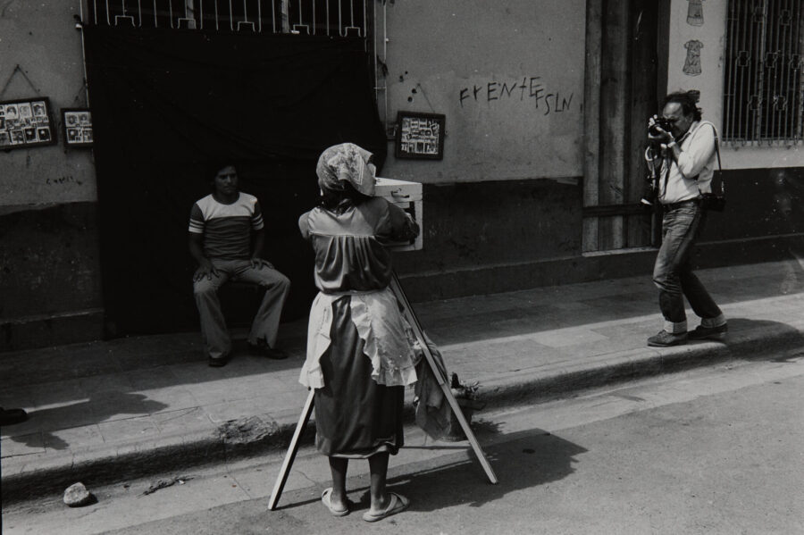

MoCP at Fifty: Collecting Through the Decades
MoCP is turning 50! Please join MoCP and friends for refreshments to celebrate the opening reception of MoCP at Fifty: Collecting Through the Decades on January 29, 2026 from 5:00-7:00 pm at the museum.
About the exhibition
This year, the Museum of Contemporary Photography turns 50 years old. Since opening in 1976 and initiating collecting in 1979, the MoCP has acquired over 18,000 objects by more than 2,000 artists, representing a broad scope of aesthetics, technologies, and processes. The variety of work collected has allowed the museum to engage in conversations across political, social, and cultural landscapes.
To celebrate this milestone, MoCP at Fifty examines the evolving practice of building a dynamic collection, presenting a range of rarely exhibited and newly acquired works. Together, these selections question and reflect on the role of cultural institutions in shaping the photographic canon. Each of the five galleries represent a decade of collecting, beginning with the most recent acquisitions (2016-2026) in the first gallery, then moving backwards through time.
Looking at MoCP’s collection decade by decade is as much an archive of history as it is of art. Collections are fluid, often evolving in ways that mirror the values and trends of society at large. The first decades are noticeably missing many women and artists of color, not because such artists were not making work at the time, but because cultural institutions had yet to fully consider the value of varied perspectives and forms of practice.
Further, up until the early 2000s, MoCP almost exclusively collected American works made post-1959. Some exceptions were made for early 20th century luminaries like Dorothea Lange and Harry Callahan, but the collection’s early identity was largely centered around the re-definition of “contemporary” characterized by Robert Frank’s seminal photobook The Americans. Humanistic, narrative documentary and street photography are largely represented in the first two decades.
In the early 2000s, the decision was made to abandon the 1959, Frank-focused benchmark to allow the collection to reflect the museum’s international exhibition record. The collection took on a new, eclectic form, eventually inspiring the museum’s new mission “to promote a greater understanding and appreciation of the artistic, cultural and political implication of the image in our world today.” The later decades were collected with intention, not only of addressing gaps in representation, but to embrace conceptual works and works that push the boundary of what defines “photography,” in the process expanding, innovating, and redefining what a photography museum can offer the public.
MoCP at Fifty honors the museum’s ongoing dedication to collecting as a deliberate, mercurial, and educational process that contributes to keeping photography’s many narratives alive and in dialogue with the present.